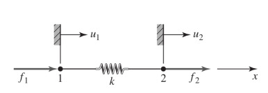
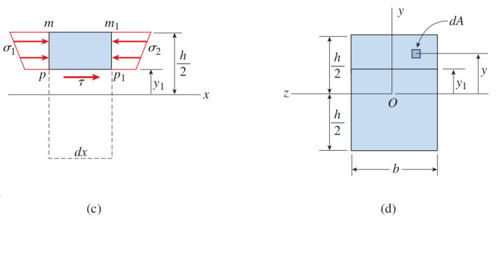
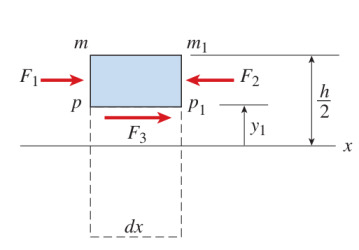
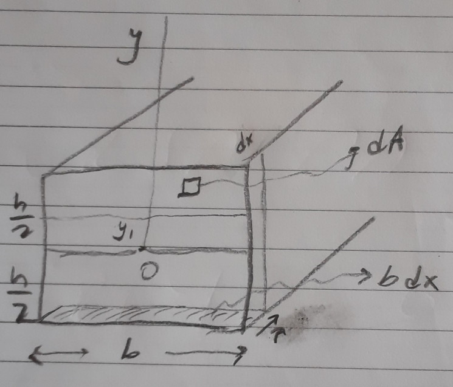
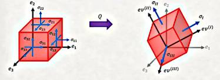
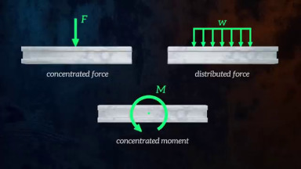

Materyel Mekaniği - 2
Kirişin Yatay Kesme Stresi
Yatay kesme stresinin mevcut olduğunun belki de en iyi ispatı alttaki şekli göstermek. İki tane tıpatıp aynı kirişi üst üste koysak ve üstten bir $P$ yükü uygulasak, eğer kirişler arası sürtünme çok az ise kirişler birbirinden ayrı şekilde büküleceklerdi, (b) şeklinde görüldüğü gibi.

Şimdi hayal edelim ki kirişler birbirine tutkal ile yapıştırıldı, bu şekilde iki parça tek bir parça haline geldi. Bu birleşik kiriş yüklendiğinde o yapıştırılan yatay yüzeyde stresler oluşmalıdır ki yapıştırılmış yüzeyin üst (b) şekildeki gibi kayması engellensin. Bu kesme stresleri sayesinde tek birleşik kiriş ayrı ayrı iki kirişten daha katıdır / serttir (stiff). Aynı kavram genel olarak moleküler yapışma ile tek parça nesnelere de uygulayanabilirdi. Bir vidaya dikey yönde uygulanan yük kesme yönünde stres yaratır, ki bu stresler moleküler bağlantılar üzerinden ortaya çıkar.
Türetmeye gelelim [2, sf. 388]. Birörnek bükülmeye maruz olan bir kirişi düşünelim, yine üstteki (a) resmini referans alıyoruz, bu kirişte $\mathrm{d} x$ genişliğindeki ufak bir parçaya odaklanalım, bu ufak parçanın sol kısmına etki eden kesme kuvveti ve bükülme momenti $V$ ve $M$. Eksende sağa gittikçe bu değerler değişik olabileceği için parçanın sağında $V + \mathrm{d} V$ ve $M + \mathrm{d} M$ olacaktır.

$\sigma_1$ ve $\sigma_2$ formüllerini yazalim, bükülme normal stres (flexure) formülünden $\sigma = My / I$ olduğunu biliyoruz,
$$ \sigma_1 = -\frac{My}{I}, \quad \sigma_2 = \frac{(M + \mathrm{d} M)y}{I} $$
Üstteki (b) resminde daha da ufak bir bölgeye odaklanalım, alttaki (c) resminde daha net gösteriliyor,

Bu parçanın en üst kısmı kirişin en üstü, orada yatay kesme stresi yok. Parçanın alt kısmındaki strese $\tau$ diyelim. (c) figürünün sol taraftan bakılan hali (d) resminde. Kuvvetleri düşünürsek, $F_1,F_2,F_3$ diyelim alttaki gibi olur.

Denge açısından
$$ F_3 = F_2 - F_1 $$
olmalıdır.
Bu kuvvetleri yerine koyalım o zaman, mesela $\sigma_1$'den hareketle,
$$ \sigma_1 \mathrm{d} A = \frac{My}{I} \mathrm{d} A $$
Tüm $F_1$ kuvveti için tanımladığımız alan üzerinden entegral alalım,
$$ F_1 = \int \sigma_1 \mathrm{d} A = \int \frac{My}{I} \mathrm{d} A $$
$F_2,F_3$ için benzer şekilde,
$$ F_2 = \int \sigma_2 \mathrm{d} A = \int \frac{(M + \mathrm{d} M)y}{I} \mathrm{d} A $$
$$ F_3 = \int \frac{(M + \mathrm{d} M)y}{I} \mathrm{d} A - \int \frac{My}{I} \mathrm{d} A = \int \frac{(\mathrm{d} M)y}{I} \mathrm{d} A $$
$$ F_3 = \frac{\mathrm{d} M}{I} \int y \mathrm{d} A $$
$F_3$'e farklı bir açıdan yaklaşalım, eğer $b$ boyunca kesme stresi $\tau$ değişmiyor ise, o zaman $F_3$'ü alttaki gibi de belirtebilirdik,
$$ F_3 = \tau b \mathrm{d} x $$

Kuvvet eşittir stres çarpı alandır, $b \mathrm{d} x$ ile belirtilen alan üstteki resimde görülüyor, kirişin altındaki eni $b$ boyu $\mathrm{d} x$ olan bölgeden bahsediyoruz. Burada $\tau$ sabit ise üstteki çarpım yapılabilir, tabii ki $\tau$ büyüklüğü $y$'ye bağlı olduğu için aşağı, yukarı değişimde $\tau$ değişirdi.
Devam edelim, son iki formülü birleştirince
$$ \frac{\mathrm{d} M}{I} \int y \mathrm{d} A = \tau b \mathrm{d} x $$
Tekrar düzenleyince
$$ \tau = \frac{\mathrm{d} M}{\mathrm{d} x} \left( \frac{1}{Ib} \right) \int y \mathrm{d} A $$
$\mathrm{d} M / \mathrm{d} x$ büyüklüğü kesme kuvveti $V$'ye eşittir.
$$ \tau = \frac{V}{Ib} \int y \mathrm{d} A $$
$\int y \mathrm{d} A$ entegrali $Q$ ile gösterilir, alansal bir momenttir, yine kiriş yan yüzey şekli ile alakalı, standart şekiller için bilinen formüller vardır, o zaman nihai formül
$$ \tau = \frac{VQ}{Ib} $$
Kirişin Yatay Kesme Stresi - Alternatif Anlatım
Kesme stresi $\tau$'yu bulmak için yine kirişin ufak bir kısmına odaklanalım,

Tüm etki eden kuvvetlerin toplamı sıfır olmak zorundadır [3],
$$ -P + (P + \mathrm{d} P) + \tau b \mathrm{d} x = 0 $$
ki $b$ kesme stresinin uygulandığı noktadaki kiriş derinliğidir.
$$ -\mathrm{d} P/\mathrm{d} x = \tau b \qquad (1) $$

$P$'yi bulmak için $A$ bölgesindeki stresleri entegre ediyoruz,
$$ \int_A \mathrm{d} P = \int_A \sigma_b \mathrm{d} A $$
Fakat daha önce bulduk ki $\sigma_b = -My / I$, yerine koyunca,
$$ P = \int_A - \frac{My}{I} \mathrm{d} A $$
$M$ ve $I$ sabittir, entegral dışına çıkartılabilir,
$$ P = - \frac{M}{I} \int_A y \mathrm{d} A = - \frac{MQ}{I} $$
ki görülen entegral bir alanın kütle merkezini bulmak için kullanılan standart bir entegraldir, $Q = \int_A y \mathrm{d} A$. Devam edelim üstte bulunan $P$'yi (1)'e sokunca,
$$ - \frac{\mathrm{d}}{\mathrm{d} x} \left( - \frac{MQ}{I} \right) = \tau b $$
$$ \frac{Q}{I} \frac{\mathrm{d} M}{\mathrm{d} x} = \tau b $$
Şimdi hatırlarsak $\mathrm{d} M/\mathrm{d} x$ türevi yatay kesme / teğetsel yükü $V$'ye eşittir. O zaman
$$ \frac{Q}{I} V = \tau b $$
Nihai yatay kesme stres denklemi,
$$ \tau = \frac{V Q}{I b} $$
Problemler
Altta kiriş odaklı bazı örnek problemleri çözeceğiz. Bir kirişe yük uygulandığında dengenin muhafaza edilmesi için kiriş içinde kuvvetler oluşur. Bu iç kuvvetler kirişin destek yapısına göre farklı şekillerde ortaya çıkabilir [1].

Üstteki soldaki resimde mesela iki boyutta pimli destek dönüşe izin verir, tekerlekli yatay sağ, sol hareketi ve dönüşü serbest bırakır. Sabit destekte hiç harekete izin yoktur. Hangi harekete izin verilmediğine göre yük uygulanması ardından üst sağdaki iç kuvvetler ortaya çıkacaktır, bunlar pimli durumda dikey ve yatay kuvvetler, tekerlekli durumda dikey kuvvet, sabit durumda ise her üç mümkün tepkilerdir, yani moment, dikey ve yatay.
Yükler noktasal ya da dağıtık şekilde uygulanabilir, altta noktasal kuvvet, dağıtık kuvvet ve noktasal moment örneklerini görüyoruz.

Tipik olarak problemin beklediği kesim kuvveti ve bükülme momenti grafikleridir, bu grafiklerde $x$ ekseni yatay olarak kirişin kendisi, $y$ ekseni ise o noktada etki eden kesim ya da moment büyüklüğüdür.
Çözme yöntemi olarak iki yaklaşım mevcut, biri her kritik noktada kirişin hissettiği içsel kuvvetler ve momentleri hesaplamak için o noktalarda denge denklemlerini kullanmak, ki bu denklemlere (ve temel fiziğe göre) kirişe uyguladığımız hayali bir kesitte etki eden tüm kuvvetler ve momentler birbirini dengelemeli. Ardından bu kesit tüm kiriş boyunca kaydırılır ve gereken kuvvetler aynı denge üzerinden hesaplanır. Eğer tüm yükler noktasal ise bu yaklaşım iyi işler.

Bir diğer yaklaşım Calculus kullanmak. Bu yaklaşım temelde sürekli bazda çözüm verdiği için dağıtık yük durumunda daha kolay işler, kritik noktalara odaklanmak yerine pür formulsel düşünebiliriz . Daha önce görmüştük ki kesim kuvvet formülünün eğimi (türevi) o noktadaki uygulanan yükün negatifidir $\mathrm{d} V / \mathrm{d} x = -w$, ve bükülme moment grafiğinin eğimi ise o noktadaki kesim kuvvetine eşittir, $\mathrm{d} M / \mathrm{d} x = V$.
Problem 1
[devam edecek]
Kaynaklar
[1] The Efficient Engineer, Understanding Shear Force and Bending Moment Diagrams, https://youtu.be/C-FEVzI8oe8
[2] Gere, Mechanics of Materials, 7th Edition
[3] Gramoll, Mechanics, http://www.ecourses.ou.edu/cgi-bin/ebook.cgi?topic=me
Yukarı